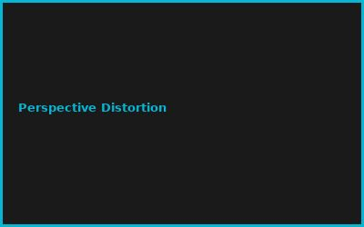
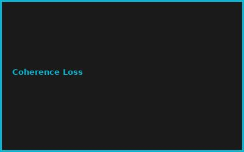
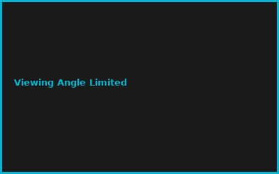
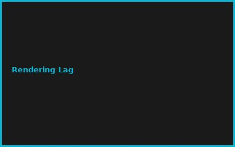

Kapitel 1: Holography Basics
- Coherence & Interference Patterns
- Holographic Recording (Film/Digital)
- Diffraction & Reconstruction
- Holographic Stereograms
Kapitel 2: Light Field Capture
# Light Field Rendering
# 4D Ray Parametrization (s,t,u,v)
# Multi-camera rig for capture
cameras = 7x7_array # 49 sensors
baseline = 10mm
Kapitel 3: Volumetric Display Methods
- Swept Surface (Fast Z-Scan)
- Varifocal Displays
- Plasma Voxels
- Acoustic Levitation
Kapitel 4: Render Pipeline
- 3D Model Preparation
- Light Field Rendering
- GPU Acceleration (CUDA)
- Real-time Computation
Kapitel 5: Display Optics
- Spatial Light Modulator (SLM)
- Micro-LED Arrays
- Viewing Zone Optimization
- Brightness & Contrast Calibration
Kapitel 6: Applications & Integration
- AR/VR Hybrid Displays
- Medical Visualization (Surgery)
- Automotive HUD (Heads-Up Display)
- Museum & Exhibition Systems
💡 PRO-TIPPS
🎯 Tipp: Retroreflektive Screen DIY
Problem: Profi Holodeck = €100K+ | Lösung: DIY Retroreflector = budget friendly
💰 BUDGET-HACKS (96% SPAREN!)
💰 Hack: Pepper's Ghost DIY
Original: Professional Hologram System: €50K+ | Hack: Pepper's Ghost + Projector: €2K | Einsparnis: 96%
⚠️ FEHLER
❌ Fehler: Vergessene Perspektive-Kalibrierung
Was passiert: Hologram verzerrt | ✅ Lösung: Multi-viewpoint rendering + Eye tracking
🌐 COMMUNITY
IEEE VR Community, Holography Soc., Looking Glass Forum, Volumetric Display Conf.
📸 Fehler-Galerie



